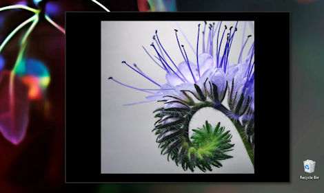
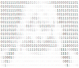

<link rel="preconnect" href="https://fonts.googleapis.com">
<link rel="preconnect" href="https://fonts.gstatic.com" crossorigin>
<link href="https://fonts.googleapis.com/css2?family=IBM+Plex+Mono:wght@400;500;600&family=IBM+Plex+Sans:wght@400;500;600&display=swap" rel="stylesheet">
<link href="../css/retro-scrollbar.css" rel="stylesheet">
<style>
    :root {
        color-scheme: dark;

        --g-10: oklch(16% 0.005 265);
        --on-surface: oklch(87% 0.005 265);
        --on-surface-body: oklch(76% 0.007 265);
        --on-surface-muted: oklch(64% 0.008 265);
        --on-surface-strong: oklch(96% 0.003 265);

        --accent: oklch(80% 0.04 245);
        --accent-bright: oklch(92% 0.03 245);

        --rule: oklch(100% 0 0 / 0.09);
        --rule-section: oklch(100% 0 0 / 0.22);
        --outline: oklch(100% 0 0 / 0.14);

        --mono: "IBM Plex Mono", "Lucida Console", Consolas, Menlo, monospace;
        --sans: "IBM Plex Sans", "Helvetica Neue", Helvetica, sans-serif;
    }

    /* opaque graphite when opened directly; transparent when framed, so the
       host panel's glass shows through (see the script at the end) */
    html {
        background-color: var(--g-10);
    }

    body {
        margin: 0;
        background-color: transparent;
        font-family: var(--sans);
        color: var(--on-surface);
    }

    a {
        color: inherit;
        text-decoration: none;
    }

    .catalog {
        max-width: 980px;
        margin: 0 auto;
        padding: 44px 40px 64px;
        counter-reset: group;
    }

    .catalog-head {
        display: flex;
        margin-bottom: 36px;
    }

    .path {
        flex: 0 0 200px;
        padding-top: 12px;
        font-family: var(--mono);
        font-size: 13px;
        color: var(--on-surface-muted);
    }

    h1 {
        margin: 0 0 8px;
        font-size: 40px;
        line-height: 1.1;
        font-weight: 600;
        letter-spacing: -0.015em;
        color: var(--on-surface-strong);
    }

    .lede {
        margin: 0;
        font-size: 18px;
        line-height: 1.5;
        color: oklch(70% 0.008 265);
    }

    /* group numbers and item numbers are counters, so adding a row renumbers everything */
    .group {
        display: flex;
        counter-increment: group;
        counter-reset: item;
    }

    .group-label {
        flex: 0 0 200px;
        box-sizing: border-box;
        padding: 34px 24px 0 0;
        border-top: 1px solid var(--rule-section);
    }

    /* the line that starts a group runs across the whole row in one color */
    .group-items > .item:first-child {
        border-top-color: var(--rule-section);
    }

    .group-label h2 {
        margin: 0;
        font-family: var(--mono);
        font-size: 12px;
        font-weight: 600;
        letter-spacing: 0.14em;
        line-height: 1.5;
        text-transform: uppercase;
        color: oklch(80% 0.006 265);
    }

    /* group number, faint, under the group title */
    .group-label h2::after {
        content: counter(group, decimal-leading-zero);
        display: block;
        margin-top: 6px;
        font-size: 28px;
        font-weight: 600;
        line-height: 1;
        letter-spacing: 0;
        color: oklch(100% 0 0 / 0.1);
    }

    .group-items {
        flex: 1 1 auto;
        min-width: 0;
    }

    .item {
        display: flex;
        gap: 32px;
        padding: 28px 0;
        border-top: 1px solid var(--rule);
        counter-increment: item;
    }

    .item:focus-visible {
        outline: 2px solid var(--accent);
        outline-offset: 4px;
        border-radius: 2px;
    }

    /* images keep their natural size: small screenshots and logos sit centered in the slot */
    .plate {
        flex: 0 0 320px;
        height: 180px;
        display: flex;
        align-items: center;
        justify-content: center;
        overflow: hidden;
    }

    .plate img {
        display: block;
        max-width: 100%;
        max-height: 100%;
        transition: filter .15s;
    }

    .plate img.inverted {
        filter: invert(1);
        opacity: 0.85;
    }

    .item-text {
        flex: 1 1 auto;
        min-width: 0;
        display: flex;
        flex-direction: column;
        gap: 10px;
        padding-top: 2px;
    }

    .item h3 {
        margin: 0;
        font-size: 28px;
        line-height: 1.15;
        font-weight: 600;
        color: var(--on-surface-strong);
        transition: color .15s;
    }

    .item p {
        margin: 0;
        font-size: 17px;
        line-height: 1.5;
        color: var(--on-surface-body);
    }

    .meta {
        margin-top: auto;
        display: flex;
        flex-wrap: wrap;
        align-items: center;
        gap: 6px;
    }

    .tag {
        font-family: var(--mono);
        font-size: 12px;
        padding: 3px 8px;
        border-radius: 2px;
        border: 1px solid var(--outline);
        color: oklch(74% 0.006 265);
    }

    .open {
        margin-left: auto;
        display: inline-flex;
        align-items: center;
        gap: 8px;
        padding: 6px 12px;
        border-radius: 2px;
        border: 1px solid oklch(100% 0 0 / 0.16);
        font-family: var(--mono);
        font-size: 13px;
        color: var(--accent);
        transition: color .15s, border-color .15s;
    }

    .open::after {
        content: "\2192";
    }

    .item:hover h3 {
        color: oklch(94% 0.03 245);
    }

    .item:hover .plate img:not(.inverted) {
        filter: brightness(1.08);
    }

    .item:hover .open {
        color: var(--accent-bright);
        border-color: oklch(83% 0.035 245 / 0.7);
    }

    /* narrow right pane: group labels move above their items */
    @media (max-width: 900px) {
        .catalog-head, .group {
            flex-direction: column;
        }

        .path {
            flex: none;
            padding: 0 0 8px;
        }

        .group-label {
            flex: none;
            display: flex;
            align-items: baseline;
            gap: 14px;
            padding: 26px 0 4px;
        }

        .group-label h2 {
            margin: 0;
        }

        .plate {
            flex-basis: 280px;
            height: 158px;
        }
    }

    @media (prefers-reduced-motion: reduce) {
        .plate img, .item h3, .open {
            transition: none;
        }
    }
</style>

<main class="catalog">
    <header class="catalog-head">
        <div class="path">~/software</div>
        <div>
            <h1>Software by g/christensen</h1>
            <p class="lede">Command lines, browser extensions, web and desktop apps, editors and Windows gadgets.</p>
        </div>
    </header>

    <section class="group">
        <div class="group-label"><h2>Command Interfaces</h2></div>
        <div class="group-items">
            <a href="https://gchristensen.github.io/#enso" class="item">
                <div class="plate"></div>
                <div class="item-text">
                    <h3>Enso Open-Source</h3>
                    <p>System-wide transparent overlay command line extensible in Python</p>
                    <div class="meta"><span class="tag">Windows</span><span class="tag">Linux</span><span class="tag">Mac</span><span class="open">open</span></div>
                </div>
            </a>
            <a href="https://gchristensen.github.io/#ishell" class="item">
                <div class="plate"></div>
                <div class="item-text">
                    <h3>iShell</h3>
                    <p>Browser-based command line extensible in JavaScript</p>
                    <div class="meta"><span class="tag">Firefox</span><span class="tag">Chrome</span><span class="open">open</span></div>
                </div>
            </a>
            <a href="https://gchristensen.github.io/#scarlett" class="item">
                <div class="plate"></div>
                <div class="item-text">
                    <h3>Scarlett</h3>
                    <p>Experimental voice command interface</p>
                    <div class="meta"><span class="tag">Windows</span><span class="open">open</span></div>
                </div>
            </a>
        </div>
    </section>

    <section class="group">
        <div class="group-label"><h2>Browser Extensions</h2></div>
        <div class="group-items">
            <a href="https://gchristensen.github.io/#scrapyard" class="item">
                <div class="plate"></div>
                <div class="item-text">
                    <h3>Scrapyard</h3>
                    <p>Advanced bookmark manager with page archiving</p>
                    <div class="meta"><span class="tag">Firefox</span><span class="tag">Chrome</span><span class="open">open</span></div>
                </div>
            </a>
            <a href="https://gchristensen.github.io/#lightning-tab-groups" class="item">
                <div class="plate"></div>
                <div class="item-text">
                    <h3>Lightning Tab Groups</h3>
                    <p>Firefox tab group manager for keyboard ninjas</p>
                    <div class="meta"><span class="tag">Firefox</span><span class="open">open</span></div>
                </div>
            </a>
            <a href="https://gchristensen.github.io/#lightning-menu" class="item">
                <div class="plate"></div>
                <div class="item-text">
                    <h3>Lightning Menu</h3>
                    <p>A toolbar button with a drop-down menu of links</p>
                    <div class="meta"><span class="tag">Firefox</span><span class="tag">Chrome</span><span class="open">open</span></div>
                </div>
            </a>
            <a href="https://gchristensen.github.io/#torrent-add" class="item">
                <div class="plate"></div>
                <div class="item-text">
                    <h3>Add Torrent To</h3>
                    <p>Add torrents to uTorrent or qBittorrent from the browser context menu</p>
                    <div class="meta"><span class="tag">Firefox</span><span class="tag">Chrome</span><span class="open">open</span></div>
                </div>
            </a>
            <!--a href="https://gchristensen.github.io/#mix-slideshow" class="item">
                <div class="plate"></div>
                <div class="item-text">
                    <h3>Mix Slideshow</h3>
                    <p>Mix images from different sources in a single slideshow</p>
                    <div class="meta"><span class="open">open</span></div>
                </div>
            </a>
            <a href="https://gchristensen.github.io/#multibutton" class="item">
                <div class="plate"></div>
                <div class="item-text">
                    <h3>MultiButton</h3>
                    <p>Open several links at once with one click</p>
                    <div class="meta"><span class="open">open</span></div>
                </div>
            </a-->
        </div>
    </section>

    <section class="group">
        <div class="group-label"><h2>Web-apps</h2></div>
        <div class="group-items">
            <a href="https://gchristensen.github.io/#NewsBlurMod" class="item">
                <div class="plate"></div>
                <div class="item-text">
                    <h3>NewsBlurMod</h3>
                    <p>NewsBlur fork with improved usability</p>
                    <div class="meta"><span class="tag">Self-hosted</span><span class="open">open</span></div>
                </div>
            </a>
            <a href="https://gchristensen.github.io/#feedxcavator" class="item">
                <div class="plate"></div>
                <div class="item-text">
                    <h3>Feedxcavator</h3>
                    <p>Experimental programmable RSS extractor and server</p>
                    <div class="meta"><span class="tag">Self-hosted</span><span class="open">open</span></div>
                </div>
            </a>
        </div>
    </section>

    <section class="group">
        <div class="group-label"><h2>Desktop-apps</h2></div>
        <div class="group-items">
            <a href="https://gchristensen.github.io/#retreat" class="item">
                <div class="plate"></div>
                <div class="item-text">
                    <h3>Enso Retreat</h3>
                    <p>A break-reminder program with transparent interface</p>
                    <div class="meta"><span class="tag">Windows</span><span class="open">open</span></div>
                </div>
            </a>
        </div>
    </section>

    <section class="group">
        <div class="group-label"><h2>Editors</h2></div>
        <div class="group-items">
            <a href="https://gchristensen.github.io/#rho" class="item">
                <div class="plate"></div>
                <div class="item-text">
                    <h3>&rho;Emacs</h3>
                    <p>Preconfigured Org-centered Emacs distribution for Windows with portable mode</p>
                    <div class="meta"><span class="tag">Windows</span><span class="open">open</span></div>
                </div>
            </a>
        </div>
    </section>

    <section class="group">
        <div class="group-label"><h2>Skins &amp; Windows Gadgets</h2></div>
        <div class="group-items">
            <a href="https://gchristensen.github.io/#silentnight" class="item">
                <div class="plate"></div>
                <div class="item-text">
                    <h3>Silent Night V6 Mod</h3>
                    <p>Feature-rich skin for foobar2000 audio player with embedded file explorer tree</p>
                    <div class="meta"><span class="tag">foobar2000</span><span class="open">open</span></div>
                </div>
            </a>
            <a href="https://gchristensen.github.io/#slideshow" class="item">
                <div class="plate"></div>
                <div class="item-text">
                    <h3>Large Slideshow Gadget</h3>
                    <p>Advanced slideshow gadget for Windows Sidebar</p>
                    <div class="meta"><span class="tag">Windows Sidebar</span><span class="open">open</span></div>
                </div>
            </a>
            <a href="https://gchristensen.github.io/#sunlight" class="item">
                <div class="plate"></div>
                <div class="item-text">
                    <h3>Sunlight World Map</h3>
                    <p>Shows the current Sun and Moon position</p>
                    <div class="meta"><span class="tag">Windows Sidebar</span><span class="open">open</span></div>
                </div>
            </a>
        </div>
    </section>

    <section class="group">
        <div class="group-label"><h2>Blogs</h2></div>
        <div class="group-items">
            <!--a href="https://gchristensen.github.io/#kinetic" class="item">
                <div class="plate"></div>
                <div class="item-text">
                    <h3>The New Kinetic</h3>
                    <p>g/christensen's personal blog</p>
                    <div class="meta"><span class="open">open</span></div>
                </div>
            </a-->
            <a href="https://gchristensen.github.io/#posts" class="item">
                <div class="plate"></div>
                <div class="item-text">
                    <h3>G/POSTS</h3>
                    <p>g/christensen's personal page</p>
                    <div class="meta"><span class="tag">Web</span><span class="open">open</span></div>
                </div>
            </a>
        </div>
    </section>
</main>

<script src="../js/retro-scrollbar.js"></script>
<script>
    if (window.parent !== window)
        document.documentElement.style.backgroundColor = "transparent";

    retroScrollbar(document.scrollingElement);

    document.querySelector(".catalog").addEventListener("click", (e) => {
        const link = e.target.closest(".item");
        if (!link) return;
        e.preventDefault();
        const hash = link.href.split("#")[1];
        if (hash) window.parent.postMessage({type: "select", hash}, "*");
    });
</script>
